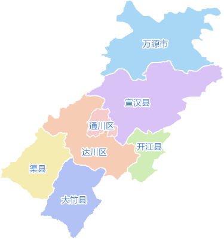
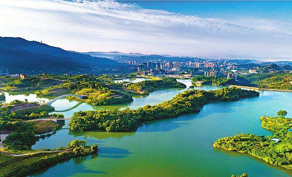
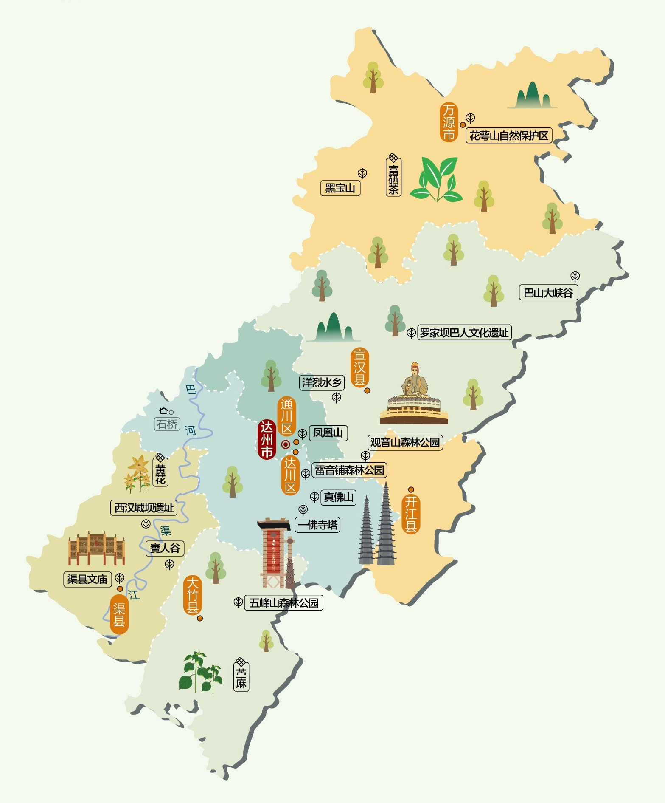
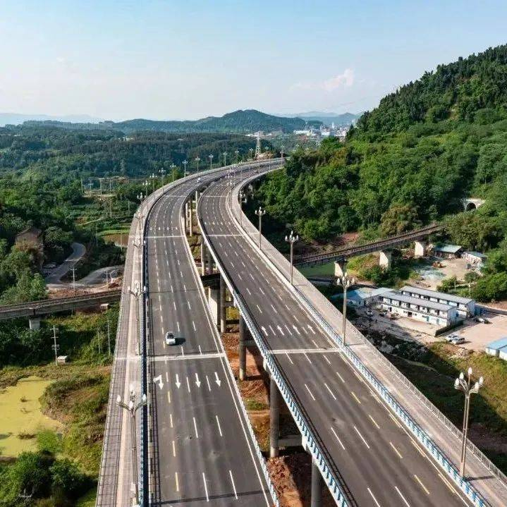

城市简介
简介
达州，古称“通州”，四川省下辖地级市，中国西部天然气能源化工基地， 川渝鄂陕结合部交通枢纽、文化商贸中心和生态宜居区域中心城市,素有“巴人故里、 中国气都”之称截至2019年,全市下辖2个区、4个县、代管1个县级市,辖区面积1.66万平方公里。截至2021年末常住人口537万人。 2022年达州实现地区生产总值(GDP)2502.7亿元。达州境内有出水量亚洲第一的百岛湖温泉，有堪称“人间仙境”的巴山大峡谷， 有被称为“川渝之巅”“伸手就能摸天”的八台奇峰，被明代著名地理学家徐霞客赞为“西南奇胜”。初步建成了以八台山龙潭河、 巴山大峡谷为重点的四季旅游产品体系和旅游要素齐全的产业体系,塑造了“巴山夜雨水墨达州”文旅品牌。达州地处中国西南地区、 四川盆地东部的丘陵与川东平行岭谷,历为该地区县、州、郡、府、道的所在地,是人口大市、农业大市、资源富市、工业重镇、交通枢纽和革命老区。达州夏朝属梁州, 殷商属雍州。1802年改达州为绥定府。1913年撤绥定府,城口厅改县。1916年达县宣布独立。1993年达县地区更名为达川地区。1999年撤销达川地区,设立地级达州市。
行政区域
行政区域
达州古称“通州”,地处中国西南地区、四川盆地东部的丘陵与川东平行岭谷,有近5000年的考古史、2300余年的建制史。历为该地区县、州、郡、府、道的所在地, 是人口大市、农业大市、资源富市、工业重镇、交通枢纽和革命老区；将建成全国巴文化高地，境内罗家坝遗址、城坝遗址是长江上游古代巴人和巴文化中心遗址的发源地; 是全国三大气田之一和国家“川气东送”的起点站;国家天然气综合开发利用示范区;国家重要能源资源战略基地(锂钾卤水储量达20.9亿立方米)；素有“巴人故里、中国气都”之称。
自然环境
自然环境
达州环境优美，宜居宜游，地势东北高西南低,海拔最高2458.3米、最低222米,明月山、铜锣山、华蓥山纵卧其间。达州气候适宜,四季分明,森林覆盖率45.6%,年均降雨量1200毫米左右, 空气质量优良天数年均300天以上。达州自然、人文景观异彩纷呈,现有国家4A级旅游景区13个,国家级自然保护区1个,国家级地质公园1个,国家级森林公园4个。达州是国家重要的能源资源战略基地, 是川气东送工程的起点,已发现各类矿产资源42种。达州还是中国苎麻之乡、中国黄花之乡、中国乌梅之乡、中国糯米之乡、中国油橄榄之都、中国富硒茶之都、中国醪糟之都。
地理环境
地理环境
达州地处四川东部,辖4县4区1市,辖区面积1.66万平方公里,地势东北高(大巴山区)，西南低(盆地丘陵区)。大巴山横直在万源宣汉北部, 明月山、铜锣山、华釜山由北而南,纵卧其间,将全市分割为山区、丘陵、平坝3块。山地占幅员面积70.70%,丘陵占28.10%,平坝占1.20%。北部山体切割剧烈，山势陡 峭，形成中、低山地貌单元；中南部较为平缓，形成平等谷地地貌单元。达州也是人口大市、 资源富市、工业重镇、交通枢纽和革命老区，享有“巴人故里、红色达州、中国气都”之称。
交通运输
交通运输
达州地处中国版图中心,是成渝、关中—天水、大武汉三大经济区的重要连接带,是四川对外开放的东大门和通江达海的东通道。达州是全国公路运输主枢纽城市, 是四川首批交通强市试点市,《成渝地区双城经济圈综合交通运输发展规划》定位达州“全国性综合交通枢纽”和“国家物流枢纽”。达州火车站是西南第四大火车站,成达万、西达渝双高铁将在达州十字交汇, 正式融入国家“八纵八横”高速铁路网。达州金垭机场建成运营,已开通20条航线,通航“北上广深”等20多个大中城市。